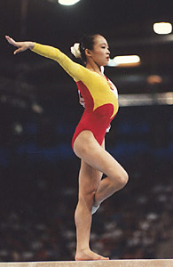

Kui Yuanyuan (CHN)
1996 World FX Champion
1997 World B Bronze Medalist

Medal Total
World Championships: 1
Gold, 2 Bronze
World Cup: 1 Silver, 1 Bronze
Kui was born on June 23, 1981.
Competition Results
1995
Canberra Cup: 3rd AA, 1st FX, 2nd B, 5th UB
1996
CHN Championships: 6th AA
Chunichi Cup: 7th AA, 1st B, 4th V, 7th FX
Olympic Games: 4th Team, 84th AA (prelims)
World Championships: 1st FX, 11th B (semis)
1997
DTB Cup: 5th V, 5th UB
East Asian Games: 1st Team, 4th AA, 2nd V, 2nd B
Swiss Cup: 1st V, 1st B
World Championships: 3rd Team, 11th AA, 3rd B, 6th V
World Stars: 8th B
1998
Asian Games: 9th AA, 1st V, 2nd FX
China Cup: 3rd AA, 1st V
Swiss Cup: 1st V, 1st B, 4th UB
World Cup: 2nd B, 3rd V
1999
Pre-Olympics: 13th AA, 1st B, 7th UB, 7th FX
This page was created on October
14, 2005 and was last updated on November 21, 2005.
© Gymn Forum